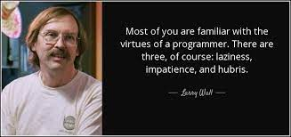

Personal Life
Wall grew up in Los Angeles and then Bremerton, Washington, before starting higher education at Seattle Pacific University in 1976, majoring in chemistry and music and later pre-medicine with a hiatus of several years working in the university's computing center before graduating with a bachelor's degree in Natural and Artificial Languages.

While in graduate school at the University of California, Berkeley, Wall and his wife were studying linguistics with the intention of finding an unwritten language, perhaps in Africa, and creating a writing system for it. They would then use this new writing system to translate various texts into the language, among them the Bible. Due to health reasons these plans were cancelled, and they remained in the United States, where Larry instead joined the NASA Jet Propulsion Laboratory after he finished graduate school. Wall is an active member of the Church of the Nazarene.
Accomplishments
Wall is the author of the rn Usenet client and the widely used patch program. He has won the International Obfuscated C Code Contest twice and was the recipient of the first Free Software Foundation Award for the Advancement of Free Software in 1998.
Wall developed the Perl interpreter and language while working for System Development Corporation, which later became part of Unisys. He is the co-author of Programming Perl (often referred to as the Camel Book and published by O'Reilly), which is the definitive resource for Perl programmers; and edited the Perl Cookbook. He then became employed full-time by O'Reilly Media to further develop Perl and write books on the subject.